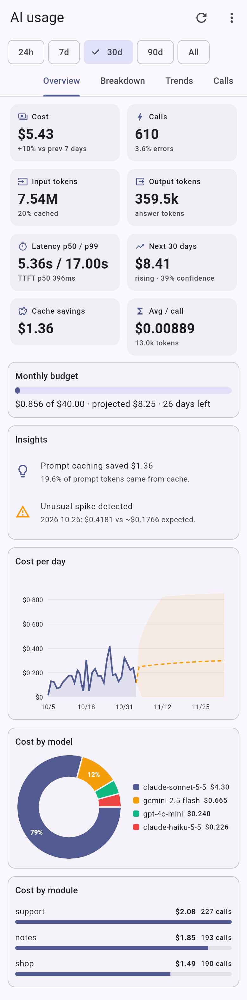
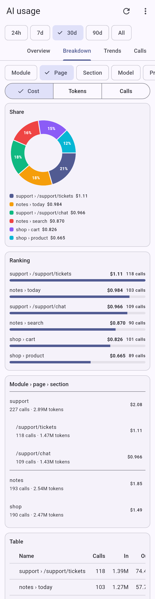
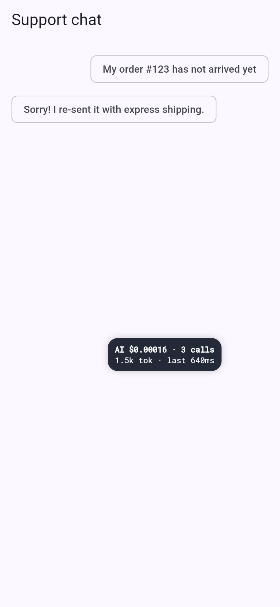
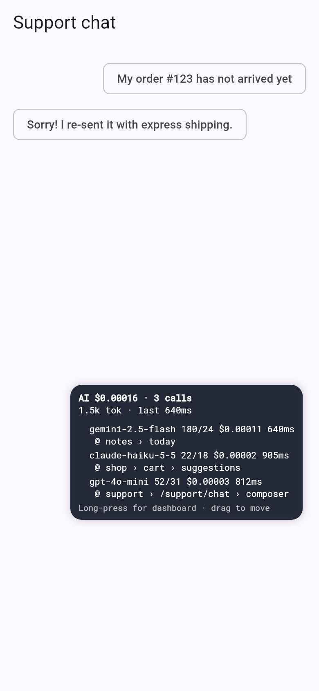

See every AI call your Flutter app makes
kaleidoscope records the tokens, cost, speed and errors of every call to any AI model, and shows you which module, page and section of your app made it. Everything stays encrypted on the device.

Every AI call recorded
Model, parameters, input, output, cached and reasoning tokens, cost, latency, time to first token and errors.
Know where it happened
Tag calls by module, page and section, plus user, feature and your own custom fields.
Drop-in dashboard
One line opens charts, forecasts, breakdowns and a searchable call log.
Real costs and budgets
30+ built-in model prices with cache discounts, updatable at runtime or from a remote file.
Private by default
Encrypted on the device. Prompts are not stored unless you allow it. PII redaction and retention.
Built for debugging
Colour-coded console logs and a floating overlay, removed automatically in release builds.
Installation
Requirements: Flutter 3.35 or newer (Dart 3.9), Android 6.0 (API 23) or newer, iOS 13 or newer.
Add the package
Run this in your project folder.
flutter pub add kaleidoscope
Android: minimum SDK 23
In android/app/build.gradle.kts, make sure minSdk is at least 23.
android {
defaultConfig {
minSdk = 23
}
}iOS: platform 13.0
In ios/Podfile, the platform must be 13.0 or higher.
platform :ios, '13.0'
Start it in main()
Two lines. Safe defaults: no prompts stored, 90-day retention, console logs in debug only.
import 'package:kaleidoscope/kaleidoscope.dart'; Future<void> main() async { WidgetsFlutterBinding.ensureInitialized(); await Kaleidoscope.init(); runApp(const MyApp()); }
ℹ [kaleidoscope] ready (SecureSqliteUsageStore, prompts: metadataOnly) in the debug console. Next, connect your AI calls.Quick start
After installing, three steps take you from nothing to a full dashboard.
Start it
Once, in main().
await Kaleidoscope.init();
Send AI calls through it
Pick the one that matches your code.
// package:http, or any SDK that accepts a client final client = Kaleidoscope.httpClient(); // Dio dio.interceptors.add(Kaleidoscope.dioInterceptor()); // Any other SDK final r = await Kaleidoscope.track( provider: 'gemini', model: 'gemini-2.5-flash', call: () => model.generateContent(prompt), );
Open the dashboard
From any button in your app.
Kaleidoscope.openDashboard(context);
Every call in your debug console
✔ [AI] openai/gpt-4o-mini chat @ support › /support/chat › composer • in 52 / out 31 • $0.000027 • 812ms ✔ [AI] anthropic/claude-haiku-5-5 chat (stream) @ shop › cart › suggestions • in 22 (+1200 cached) / out 18 • $0.000104 • 905ms (ttft 140ms) ✖ [AI] openai/gpt-4o chat • in 0 / out 0 • $0 • 233ms • error 429: Rate limit reached
Connect your AI calls
Choose the method that matches how your app talks to AI. You can mix them; every method creates the same kind of record.
package:http and SDKs that accept a client
Create one tracked client and use it everywhere. Requests and responses pass through unchanged. OpenAI-compatible, Claude, Gemini, Ollama and Cohere APIs are recognised by their URL, on any host or gateway.
OpenAIClient(client: Kaleidoscope.httpClient()).final aiClient = Kaleidoscope.httpClient(); Future<String> askOpenAI(String question) async { final res = await aiClient.post( Uri.parse('https://api.openai.com/v1/chat/completions'), headers: { 'Authorization': 'Bearer $apiKey', 'Content-Type': 'application/json', }, body: jsonEncode({ 'model': 'gpt-4o-mini', 'messages': [ {'role': 'user', 'content': question}, ], }), ); final data = jsonDecode(res.body) as Map<String, dynamic>; return data['choices'][0]['message']['content'] as String; }
Dio interceptor
Add the interceptor once. Prompt-cache reads and writes are recorded separately and priced with the cache discount. Streams are captured too.
final dio = Dio()..interceptors.add(Kaleidoscope.dioInterceptor()); final res = await dio.post( 'https://api.anthropic.com/v1/messages', options: Options(headers: { 'x-api-key': apiKey, 'anthropic-version': '2023-06-01', }), data: { 'model': 'claude-sonnet-5-5', 'max_tokens': 1024, 'messages': [ {'role': 'user', 'content': question}, ], }, );
Wrap any call with track()
For SDKs that hide the network. track returns exactly what your call returns; errors are recorded and rethrown unchanged. Leave out usage and tokens are estimated from the text, clearly marked.
final response = await Kaleidoscope.track( provider: 'gemini', model: 'gemini-2.5-flash', prompt: question, parameters: {'temperature': 0.4}, call: () => model.generateContent([Content.text(question)]), usage: (r) => AITokenUsage( inputTokens: r.usageMetadata?.promptTokenCount ?? 0, outputTokens: r.usageMetadata?.candidatesTokenCount ?? 0, ), responseText: (r) => r.text, );
Streaming answers
Through the HTTP client or Dio nothing extra is needed: SSE and NDJSON streams are copied as they pass, and time to first token is measured. Through an SDK, wrap the stream:
injectStreamUsageOption: true in the config.final stream = Kaleidoscope.trackStream<GenerateContentResponse>( provider: 'gemini', model: 'gemini-2.5-flash', call: () => model.generateContentStream([Content.text(question)]), onChunk: (c) => ( text: c.text, usage: c.usageMetadata == null ? null : AITokenUsage( inputTokens: c.usageMetadata!.promptTokenCount ?? 0, outputTokens: c.usageMetadata!.candidatesTokenCount ?? 0, ), ), );
Ollama and on-device models
Ollama is recognised by the HTTP client (use 10.0.2.2 from the Android emulator). For Gemini Nano, TFLite, ML Kit, MediaPipe or llama.cpp, use trackOnDevice. Local models are priced at zero but still timed and tagged.
final reply = await Kaleidoscope.instance.trackOnDevice( model: 'gemini-nano', runtime: 'android-aicore', inputText: question, call: () => nano.generate(question), outputText: (result) => result, );
Calls your server makes
Return the usage from your backend and record it. For a custom gateway, add its host with additionalHostsToTrack or register your own AIProviderAdapter.
Kaleidoscope.record( provider: 'openai', model: result.model, inputTokens: result.inputTokens, outputTokens: result.outputTokens, latencyMs: result.latencyMs, );
Tag calls by module, page and section
Knowing you spent $40 is useful. Knowing $31 came from the suggestions section of the cart page lets you act.
Scopes nest and merge; the most specific value wins. Add feature, userId, conversationId, tags and a custom map, then break analytics down by any of them.
final reply = await Kaleidoscope.scope( module: 'shop', page: 'cart', section: 'suggestions', () => aiClient.post(url, body: body), );
// A route named /shop/cart becomes // module 'shop' and page '/shop/cart'. MaterialApp( navigatorObservers: [Kaleidoscope.navigatorObserver()], );
AIUsageScope( module: 'support', page: 'chat', child: const ChatPage(), ); // inside ChatPage AIUsageScope.run(context, () => ask(text), section: 'composer');
await Kaleidoscope.init( defaultContext: const AIUsageContext( custom: {'plan': 'pro', 'flavor': 'prod'}, ), );
Supported providers
The HTTP client and Dio interceptor recognise these API styles by URL path, on any host, proxy or gateway. Anything else works with track, record or a custom adapter.
| API style | Recognised by | Examples |
|---|---|---|
| OpenAI-compatible | /chat/completions /responses /embeddings | OpenAI, Azure OpenAI, Groq, Mistral, DeepSeek, Together, OpenRouter, xAI, Perplexity, Fireworks, vLLM, LM Studio, LiteLLM |
| Anthropic Messages | /v1/messages | Claude models, including prompt-cache reads and writes |
| Gemini | :generateContent :streamGenerateContent | Gemini API and Vertex AI, including thinking tokens |
| Ollama | /api/chat /api/generate | Any local model, priced at zero |
| Cohere | /v2/chat | Command models |
| On-device | trackOnDevice() | Gemini Nano, TensorFlow Lite, ML Kit, MediaPipe, llama.cpp |
| Anything else | track() · record() · adapters | Your own gateway, any SDK, server-side calls |
The dashboard
Open it with Kaleidoscope.openDashboard(context) or push AIAnalyticsScreen(). It updates live and offers 24h, 7d, 30d, 90d and All ranges.
Overview
Cost, calls, tokens, latency p50/p99, 30-day forecast, cache savings, monthly budget and insights.
AIAnalyticsScreen( allowInRelease: true, // hidden in release by default accessPin: '2580', onExport: (format, content) => Share.share(content), )
Debug console and floating overlay
While you develop, every call is printed to the debug console and shown in a small live overlay. Both are removed automatically in profile and release builds.
Console
✔ [AI] anthropic/claude-haiku-5-5 chat (stream) @ shop › cart › suggestions
• in 22 (+1200 cached) / out 18 • $0.000104 • 905ms (ttft 140ms)| Level | Prints |
|---|---|
off | Nothing |
errors | Failed calls only |
summary (default) | One line per call |
verbose | Also parameters and custom data |
Overlay
final navKey = GlobalKey<NavigatorState>(); MaterialApp( navigatorKey: navKey, builder: (context, child) => AIUsageDebugOverlay(navigatorKey: navKey, child: child!), );

Collapsed

Tap to expand
Privacy and security
Nothing leaves the device unless you add a sink. kaleidoscope has no servers and no telemetry.
Prompt storage
| Mode | Turn on with | Stored |
|---|---|---|
| Metadata only default | nothing | Numbers, model, parameters and tags. No text |
| Redacted | PromptStorageMode.redacted | Text with emails, phones, cards, keys, tokens and IPs removed |
| Full | storePrompts: true | Complete text, encrypted |
await Kaleidoscope.init( promptStorage: PromptStorageMode.redacted, keepFor: const Duration(days: 90), maxRecords: 50000, keepPromptTextFor: const Duration(days: 7), );
Encrypted at rest
SQLCipher database with AES-256. A random 256-bit key is created on first launch and kept in the iOS Keychain or Android Keystore.
Retention you control
Old records are deleted at start-up and every 6 hours. Wipe everything with clearAll(), or edit records with beforeSave.
Costs, prices and budgets
Built-in prices for 30+ models with prompt-cache discounts. Update them in the app or from a JSON file you host, without releasing a new version.
Change a price
Kaleidoscope.pricing.setPrice( 'gpt-4o*', const ModelPrice( inputPerMillion: 2.5, outputPerMillion: 10, cachedInputPerMillion: 1.25, ), );
Remote price file
{
"version": "2026-11",
"currency": "USD",
"models": {
"gpt-4o-mini*": { "input": 0.15, "output": 0.6 },
"ollama:*": { "input": 0, "output": 0 }
}
}Estimate and budget
final e = Kaleidoscope.estimate( model: 'gpt-4o', prompt: text, expectedOutputTokens: 500, ); await Kaleidoscope.init(monthlyBudget: 40);
Analytics API and chart widgets
Everything in the dashboard is available as data, and the charts are available as widgets that follow your theme.
Analytics
final a = Kaleidoscope.analytics; await a.summary(from: DateTime.now().subtract(const Duration(days: 7))); await a.breakdown(UsageDimension.model); // module, page, section... await a.moduleTree(); // module › page › section await a.timeSeries(TimeBucket.day); await a.latency(); // p50 to p99, TTFT, tokens/s await a.forecast(metric: 'cost', days: 30); await a.anomalies(); await a.budget(40); await a.compare(const Duration(days: 7)); await a.insights(); final report = await a.report(); // everything at once
Build your own screens
Column(children: [ AIStatCard(label: 'Cost', value: AIFormat.money(report.totals.cost)), AIUsageLineChart(points: report.daily, forecast: report.costForecast), AIUsagePieChart(items: report.byModel), AIUsageBarList(items: report.byPage), AIUsageHeatmap(grid: report.heatmap), ]);
Export and integrations
Export JSON, CSV or a self-contained HTML report. Sinks are optional: they batch records, wait offline, retry with backoff and send numbers only unless you set includeText: true.
final html = await Kaleidoscope.exportHtml(); final csv = await Kaleidoscope.exportCsv(); final json = await Kaleidoscope.exportJson(); Kaleidoscope.addSink(ServerSyncSink( endpoint: Uri.parse('https://api.example.com/ai-usage'), )); Kaleidoscope.addSink(PostHogSink(apiKey: 'phc_...')); Kaleidoscope.addSink(MixpanelSink(projectToken: '...')); Kaleidoscope.addSink(OpenTelemetrySink.langfuse( publicKey: 'pk-lf-...', secretKey: 'sk-lf-...', ));
| Sink | Sends to |
|---|---|
ServerSyncSink | Your own endpoint. A dependency-free sample server is included in example/server |
PostHogSink | PostHog LLM analytics events |
MixpanelSink | Mixpanel events |
OpenTelemetrySink | Any OTLP endpoint with GenAI conventions: Grafana, Honeycomb, Datadog, Langfuse |
CallbackSink | Anything you write yourself, such as Firebase |
Installation and integration guide
A complete, beginner-friendly PDF: from first install to production, with screenshots and copy-paste code for every provider.
Release notes
kaleidoscope follows semantic versioning.
1.0.0
LatestNovember 2026 · First public release- Capture every AI call from any provider:
http.Clientwrapper, Dio interceptor,track/trackStreamwrappers, on-device models and server-reported usage. - Recognises OpenAI-compatible, Anthropic, Gemini, Ollama and Cohere APIs automatically, including streaming (SSE and NDJSON) with time to first token.
- Module, page and section tagging through zones, widget scopes and a navigator observer.
- Encrypted storage (SQLCipher, key in Keychain / Keystore) with metadata-only, redacted and full prompt modes, PII redaction and retention policies.
- Updatable price table with prompt-cache discounts, remote price files and pre-call cost estimates.
- Analytics: breakdowns, trends, Holt forecasts, anomalies, budgets, latency percentiles and plain-language insights.
- Drop-in analytics dashboard, chart widgets and a floating debug overlay.
- JSON, CSV and HTML export; opt-in sinks for your server, PostHog, Mixpanel and OpenTelemetry (including Langfuse).
- Optional provider fallback router with a circuit breaker.
Terms and Conditions
Effective 7 November 2026. kaleidoscope is a free, experimental open source project: use it at your own risk. It is independent and not affiliated with or endorsed by any AI provider. All names and brands belong to their owners. Data can be inaccurate: always cross-check with your provider.
1. An experimental, free, open source project
1.1 kaleidoscope is a free, open source and experimental project. It is developed by an individual in personal time and shared with the developer community for learning, experimentation and evaluation. It is not a commercial product or a paid service. It is not sold, and the Author receives no payment, fee or other consideration from you for it.
1.2 The version number (for example "1.0.0") follows semantic versioning and describes the stability of the programming interface only. It does not mean that the Project is complete, production-ready, audited, certified or guaranteed in any way.
1.3 The Project may contain bugs, errors and security issues. It may change, break, stop working with a provider or be discontinued at any time, without notice.
1.4 You use the Project entirely at your own risk. You alone decide whether it is suitable for your purpose, and you are responsible for reviewing, testing and monitoring it before and while you rely on it.
1.5 Using the Project does not create any contract for services, and no partnership, agency, employment, supplier-customer, fiduciary or other relationship between you and the Author or any contributor.
1.6 If you are not satisfied with the Project for any reason, your sole and exclusive remedy is to stop using it.
License
kaleidoscope is open source under the BSD 3-Clause License.
BSD 3-Clause License Copyright (c) 2026, Sanket Santosh Vidya Manohar All rights reserved. Redistribution and use in source and binary forms, with or without modification, are permitted provided that the following conditions are met: 1. Redistributions of source code must retain the above copyright notice, this list of conditions and the following disclaimer. 2. Redistributions in binary form must reproduce the above copyright notice, this list of conditions and the following disclaimer in the documentation and/or other materials provided with the distribution. 3. Neither the name of the copyright holder nor the names of its contributors may be used to endorse or promote products derived from this software without specific prior written permission. THIS SOFTWARE IS PROVIDED BY THE COPYRIGHT HOLDERS AND CONTRIBUTORS "AS IS" AND ANY EXPRESS OR IMPLIED WARRANTIES, INCLUDING, BUT NOT LIMITED TO, THE IMPLIED WARRANTIES OF MERCHANTABILITY AND FITNESS FOR A PARTICULAR PURPOSE ARE DISCLAIMED. IN NO EVENT SHALL THE COPYRIGHT HOLDER OR CONTRIBUTORS BE LIABLE FOR ANY DIRECT, INDIRECT, INCIDENTAL, SPECIAL, EXEMPLARY, OR CONSEQUENTIAL DAMAGES (INCLUDING, BUT NOT LIMITED TO, PROCUREMENT OF SUBSTITUTE GOODS OR SERVICES; LOSS OF USE, DATA, OR PROFITS; OR BUSINESS INTERRUPTION) HOWEVER CAUSED AND ON ANY THEORY OF LIABILITY, WHETHER IN CONTRACT, STRICT LIABILITY, OR TORT (INCLUDING NEGLIGENCE OR OTHERWISE) ARISING IN ANY WAY OUT OF THE USE OF THIS SOFTWARE, EVEN IF ADVISED OF THE POSSIBILITY OF SUCH DAMAGE.
You can
Use it commercially, modify it, distribute it and use it privately.
You must
Keep the copyright notice, the conditions and the disclaimer in source and binary distributions.
You cannot
Use the author's name to endorse or promote your product without written permission. The software comes without warranty.
kaleidoscope
AI usage analytics for Flutter · v1.0.0
© 2026 Sanket Santosh Vidya Manohar. Released under the BSD 3-Clause License.
All product names, logos and brands are the property of their respective owners.